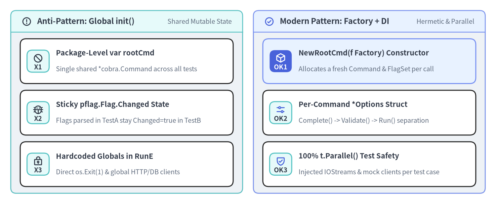
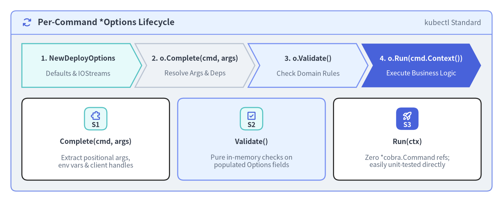

Factory Pattern, Options Structs & Dependency Injection
Many introductory Cobra tutorials—and the legacy cobra-cli scaffolding tool—declare commands as package-level global variables (var rootCmd = &cobra.Command{...}) wired together inside func init(). While convenient for a 100-line script, package-level command singletons break state isolation, cause data races in t.Parallel() unit tests, and make dependency injection impossible. This page presents the production architecture used by kubectl, GitHub CLI (gh), Helm, and Docker: constructor factories (NewCmd*), 3-stage *Options structs (Complete -> Validate -> Run), and dependency injection via closures and context.Context.

Source Code
from drawlib.canvas import save, setup
from drawlib.icons import phosphor
from drawlib.smartarts import CardList, Panel
from drawlib.styles import Styles
setup(width=184, height=76, dpi=150)
left_panel = Panel(
"Anti-Pattern: Global init()",
"Shared Mutable State",
style=Styles.Neutral.patch(shape_r=2.0),
header_style=Styles.SecondaryNeutral.patch(shape_line_width=1.2),
text_style=Styles.DarkBold.patch(text_size=11.5),
description_style=Styles.Muted.patch(text_size=9.5),
icon=phosphor.warning_circle,
icon_style=Styles.DarkBold,
header_variant="filled",
header_height=8.0,
)
left_panel.draw((4.0, 4.0), width=86.0, height=68.0)
l_xy, l_w, l_h = left_panel.get_content_box((4.0, 4.0), width=86.0, height=68.0, padding=(3.5, 2.5))
bad_list = CardList(
style=Styles.White,
text_style=Styles.DarkBold.patch(text_size=10.5),
description_style=Styles.Muted.patch(text_size=9.5),
badge_shape="rounded_rect",
badge_style=Styles.SecondaryNeutral,
badge_text_style=Styles.DarkBold.patch(text_size=9.5),
icon_style=Styles.DarkBold,
direction="vertical",
spacing=2.5,
)
bad_list.add(
"Package-Level var rootCmd",
"Single shared *cobra.Command across all tests",
badge_text="X1",
icon=phosphor.prohibit,
)
bad_list.add(
"Sticky pflag.Flag.Changed State",
"Flags parsed in TestA stay Changed=true in TestB",
badge_text="X2",
icon=phosphor.bug,
)
bad_list.add(
"Hardcoded Globals in RunE",
"Direct os.Exit(1) & global HTTP/DB clients",
badge_text="X3",
icon=phosphor.lock_key,
)
bad_list.draw(l_xy, width=l_w, height=l_h)
right_panel = Panel(
"Modern Pattern: Factory + DI",
"Hermetic & Parallel",
style=Styles.Neutral.patch(shape_r=2.0),
header_style=Styles.PrimaryNeutral.patch(shape_line_width=1.2),
text_style=Styles.DarkBold.patch(text_size=11.5),
description_style=Styles.Muted.patch(text_size=9.5),
icon=phosphor.check_circle,
icon_style=Styles.PrimaryBold,
header_variant="filled",
header_height=8.0,
)
right_panel.draw((94.0, 4.0), width=86.0, height=68.0)
r_xy, r_w, r_h = right_panel.get_content_box((94.0, 4.0), width=86.0, height=68.0, padding=(3.5, 2.5))
good_list = CardList(
style=Styles.White,
text_style=Styles.DarkBold.patch(text_size=10.5),
description_style=Styles.Muted.patch(text_size=9.5),
badge_shape="rounded_rect",
badge_style=Styles.SecondaryNeutral,
badge_text_style=Styles.DarkBold.patch(text_size=9.5),
icon_style=Styles.PrimaryBold,
direction="vertical",
spacing=2.5,
)
good_list.add(
"NewRootCmd(f Factory) Constructor",
"Allocates a fresh Command & FlagSet per call",
badge_text="OK1",
icon=phosphor.cube,
style=Styles.PrimaryNeutral,
badge_style=Styles.PrimaryFlat,
badge_text_style=Styles.WhiteBold.patch(text_size=9.5),
icon_style=Styles.WhiteBold,
)
good_list.add(
"Per-Command *Options Struct",
"Complete() -> Validate() -> Run() separation",
badge_text="OK2",
icon=phosphor.sliders_horizontal,
)
good_list.add(
"100% t.Parallel() Test Safety",
"Injected IOStreams & mock clients per test case",
badge_text="OK3",
icon=phosphor.shield_check,
)
good_list.draw(r_xy, width=r_w, height=r_h)
save()
1. Why Package-Level var rootCmd + init() Fails at Scale
Consider what happens when a CLI defines package-level global variables and binds flags inside func init():
// ANTI-PATTERN: Do NOT use package-level Command or flag variables in production CLIs!
var (
replicas int
dryRun bool
deployCmd = &cobra.Command{
Use: "deploy",
RunE: func(cmd *cobra.Command, args []string) error {
// Mutates/reads package-level globals!
return runDeploy(replicas, dryRun)
},
}
)
func init() {
deployCmd.Flags().IntVar(&replicas, "replicas", 1, "Number of replicas")
deployCmd.Flags().BoolVar(&dryRun, "dry-run", false, "Simulate deployment")
rootCmd.AddCommand(deployCmd)
}
When you write unit tests for this package, three severe bugs surface immediately:
- Sticky Flag Mutation Across Tests (
pflag.Flag.Changed):- In Test 1, you run
rootCmd.SetArgs([]string{"deploy", "--dry-run", "--replicas=5"})and callrootCmd.Execute(). That sets the globaldryRun = true,replicas = 5, and marks bothpflag.Flagstructs asChanged = true. - In Test 2, you run
rootCmd.SetArgs([]string{"deploy"})expecting the defaults (dryRun == false,replicas == 1). Instead,pflagdoes not reset flags omitted fromos.Args—so Test 2 silently inheritsdryRun == trueandreplicas == 5from Test 1!
- In Test 1, you run
- Data Races Under
t.Parallel():- Because
Command.args,Command.flags,Command.outWriter, and your bound flag variables live in shared package memory, running two subtests witht.Parallel()triggers immediate Go race detector (go test -race) failures.
- Because
- Uncontrollable Import Side Effects:
- Importing the
cmdpackage anywhere automatically executes allinit()functions, making it impossible to construct a subset of commands or inject mock API clients before command registration.
- Importing the
2. The 3-Stage *Options Pattern (Complete, Validate, Run)
To decouple Cobra's CLI parsing mechanics from your domain logic, give every command its own <Command>Options struct and a New<Command>Cmd constructor.
Pioneered by kubectl (k8s.io/cli-runtime), the *Options struct implements three distinct methods that execute sequentially inside RunE:

Source Code
from drawlib.canvas import save, setup
from drawlib.icons import phosphor
from drawlib.smartarts import CardList, ChevronProcess, Panel
from drawlib.styles import Styles
setup(width=184, height=74, dpi=150)
outer = Panel(
"Per-Command *Options Lifecycle",
"kubectl Standard",
style=Styles.Neutral.patch(shape_r=2.0),
header_style=Styles.PrimaryNeutral.patch(shape_line_width=1.2),
text_style=Styles.DarkBold.patch(text_size=12.0),
description_style=Styles.Muted.patch(text_size=10.0),
icon=phosphor.arrows_clockwise,
icon_style=Styles.PrimaryBold,
header_variant="filled",
header_height=8.5,
)
outer.draw((4.0, 4.0), width=176.0, height=66.0)
proc = ChevronProcess(
style=Styles.White,
text_style=Styles.DarkBold.patch(text_size=10.0),
description_style=Styles.Muted.patch(text_size=9.5),
corner_angle=62.0,
spacing=1.8,
flat_left_end=True,
)
proc.add("1. NewDeployOptions", description="Defaults & IOStreams", style=Styles.SecondaryNeutral)
proc.add("2. o.Complete(cmd, args)", description="Resolve Args & Deps", style=Styles.Neutral)
proc.add("3. o.Validate()", description="Check Domain Rules", style=Styles.PrimaryNeutral)
proc.add(
"4. o.Run(cmd.Context())",
description="Execute Business Logic",
style=Styles.PrimaryFlat,
text_style=Styles.WhiteBold.patch(text_size=10.0),
description_style=Styles.White.patch(text_size=9.5),
)
proc.draw(xy=(8.0, 42.0), width=168.0, height=16.0)
details = CardList(
style=Styles.White,
text_style=Styles.DarkBold.patch(text_size=10.0),
description_style=Styles.Muted.patch(text_size=9.5),
badge_shape="rounded_rect",
badge_style=Styles.SecondaryNeutral,
badge_text_style=Styles.DarkBold.patch(text_size=9.5),
icon_style=Styles.PrimaryBold,
direction="horizontal",
spacing=3.0,
)
details.add(
"Complete(cmd, args)",
"Extract positional args,\nenv vars & client handles",
badge_text="S1",
icon=phosphor.puzzle_piece,
)
details.add(
"Validate()",
"Pure in-memory checks on\npopulated Options fields",
badge_text="S2",
icon=phosphor.check_square,
style=Styles.PrimaryNeutral,
)
details.add(
"Run(ctx)",
"Zero *cobra.Command refs;\neasily unit-tested directly",
badge_text="S3",
icon=phosphor.rocket_launch,
badge_style=Styles.PrimaryFlat,
badge_text_style=Styles.WhiteBold.patch(text_size=9.5),
icon_style=Styles.WhiteBold,
)
details.draw(xy=(8.0, 8.0), width=168.0, height=30.0)
save()
Complete Production Implementation (cmd/deploy.go)
package cmd
import (
"context"
"fmt"
"io"
"time"
"github.com/spf13/cobra"
)
// Deployer abstracts the backend deployment API for dependency injection.
type Deployer interface {
Deploy(ctx context.Context, service string, replicas int, timeout time.Duration) error
}
// IOStreams bundles standard input, output, and error streams.
type IOStreams struct {
In io.Reader
Out io.Writer
ErrOut io.Writer
}
// DeployOptions holds all configuration and dependencies for "cloudctl deploy".
type DeployOptions struct {
IOStreams
// Bound directly to pflag
Replicas int
Timeout time.Duration
DryRun bool
// Populated during Complete()
ServiceName string
Client Deployer
}
// NewDeployOptions returns a DeployOptions struct initialized with safe defaults.
func NewDeployOptions(streams IOStreams) *DeployOptions {
return &DeployOptions{
IOStreams: streams,
Replicas: 2,
Timeout: 30 * time.Second,
}
}
// NewDeployCmd constructs the "deploy" command and binds flags to a fresh DeployOptions.
func NewDeployCmd(f Factory) *cobra.Command {
o := NewDeployOptions(f.IOStreams())
cmd := &cobra.Command{
Use: "deploy <service-name>",
Short: "Roll out a service to the target cluster",
Args: cobra.ExactArgs(1),
RunE: func(cmd *cobra.Command, args []string) error {
if err := o.Complete(f, cmd, args); err != nil {
return err
}
if err := o.Validate(); err != nil {
return err
}
return o.Run(cmd.Context())
},
}
cmd.Flags().IntVarP(&o.Replicas, "replicas", "r", o.Replicas, "Desired replica count (1..100)")
cmd.Flags().DurationVar(&o.Timeout, "timeout", o.Timeout, "Rollout deadline")
cmd.Flags().BoolVar(&o.DryRun, "dry-run", false, "Validate without mutating cluster state")
return cmd
}
// Complete resolves positional arguments, dynamic defaults, and injected clients.
func (o *DeployOptions) Complete(f Factory, cmd *cobra.Command, args []string) error {
o.ServiceName = args[0]
client, err := f.DeployerClient()
if err != nil {
return fmt.Errorf("initializing deployer client: %w", err)
}
o.Client = client
return nil
}
// Validate enforces domain invariants before any network I/O occurs.
func (o *DeployOptions) Validate() error {
if o.Replicas < 1 || o.Replicas > 100 {
return fmt.Errorf("--replicas must be between 1 and 100 (got %d)", o.Replicas)
}
if o.Timeout <= 0 {
return fmt.Errorf("--timeout must be positive (got %s)", o.Timeout)
}
return nil
}
// Run executes the core command behavior without touching *cobra.Command.
func (o *DeployOptions) Run(ctx context.Context) error {
if o.DryRun {
fmt.Fprintf(o.Out, "[DRY-RUN] Would deploy %s (%d replicas)\n", o.ServiceName, o.Replicas)
return nil
}
if err := o.Client.Deploy(ctx, o.ServiceName, o.Replicas, o.Timeout); err != nil {
return err
}
fmt.Fprintf(o.Out, "Deployed %s (%d replicas) successfully\n", o.ServiceName, o.Replicas)
return nil
}
Why Complete() -> Validate() -> Run() Scales So Well
Complete(): Bridges CLI concerns (cmd,args,Factory) into strongly-typed fields onDeployOptions.Validate(): Pure, deterministic validation ofDeployOptionsfields—can be tested directly in Go without even constructing a*cobra.Command.Run(ctx): Has zero dependency on*cobra.Commandorpflag. It reads fromDeployOptions, writes too.Out, and callso.Client.Deploy(ctx, ...).
3. Two Idiomatic Dependency Injection Mechanisms
When passing shared infrastructure (loggers, API clients, credential stores, IOStreams) down a command tree, choose between Closure Constructor Injection and context.Context Propagation:
| Mechanism | How It Works | Best Used For |
|---|---|---|
| 1. Constructor / Factory Injection (Recommended) | Pass a Factory interface or Dependencies struct into NewRootCmd(f) and forward f to child New*Cmd(f) constructors. |
Static or lazy-initialized dependencies (IOStreams, HTTP/gRPC client builders, config loaders). Compile-time type-safe! |
2. context.Context Injection (ExecuteContext) |
Attach request-scoped values to ctx in main.go (rootCmd.ExecuteContext(ctx)) or inside PersistentPreRunE (cmd.SetContext(ctx)), and read via cmd.Context(). |
Cancellation signals (SIGINT/SIGTERM), OpenTelemetry trace spans, and dynamic auth tokens resolved inside PersistentPreRunE. |
Defining a Clean Factory Interface
Following GitHub CLI (gh) and kubectl, define a narrow Factory interface in an internal package so lazy initialization (such as opening a database or reading ~/.kube/config) only happens when a leaf command's Complete() method actually requests it:
type Factory interface {
IOStreams() IOStreams
DeployerClient() (Deployer, error)
}
Because f.DeployerClient() is called inside o.Complete() (which runs during RunE) rather than inside NewDeployCmd(f) (which runs at startup), running cloudctl --help or cloudctl version never wastes time initializing network clients or failing on missing credentials!
Next Steps
Continue to Multi-Package Layout & Hermetic Testing to see how to organize dozens of subcommands across domain packages and write sub-millisecond in-memory go test suites using ExecuteC().